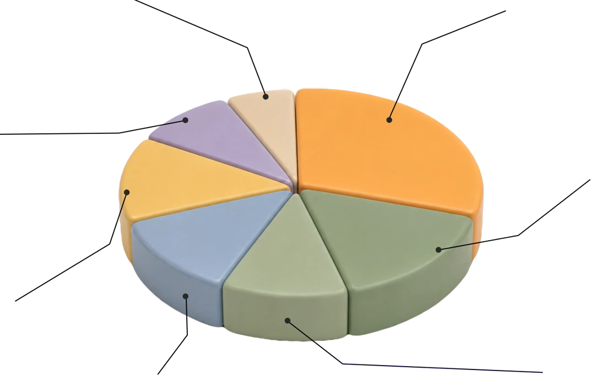
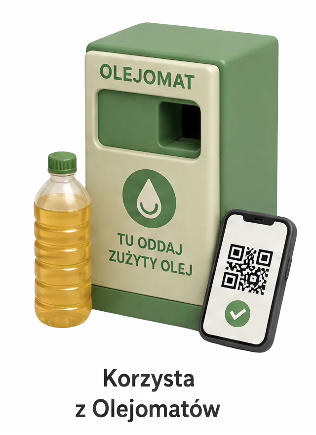
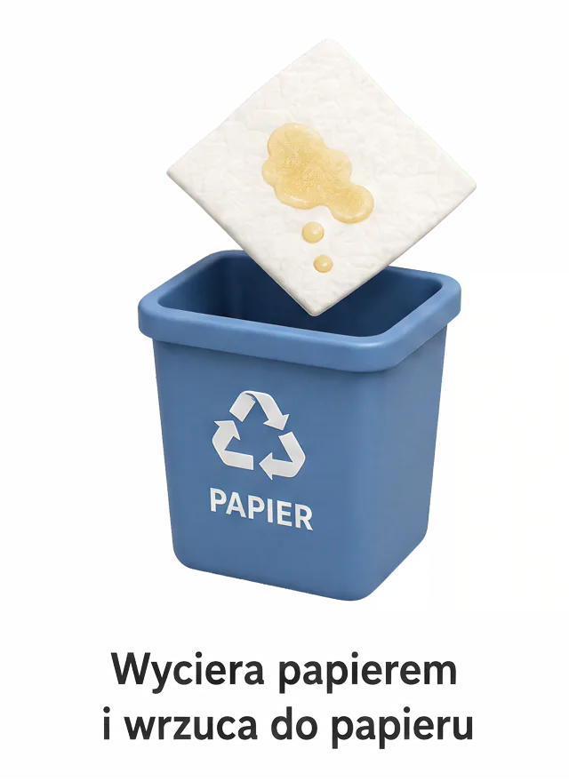
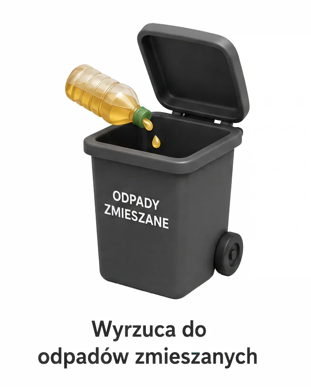
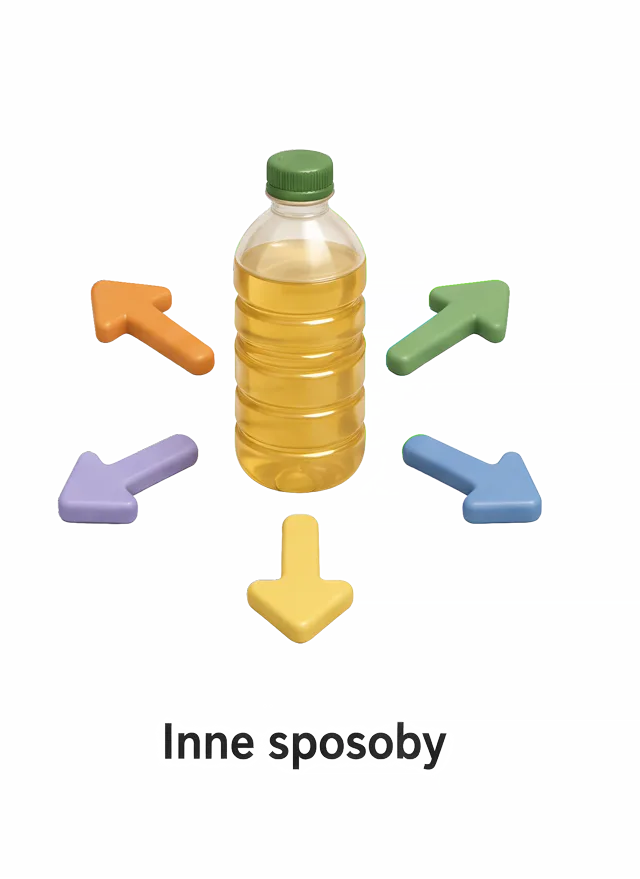
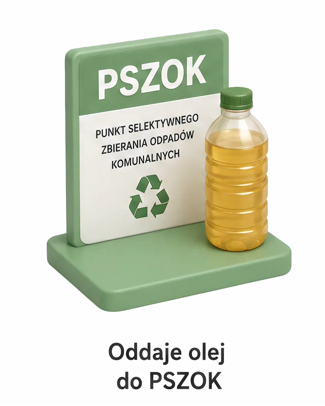

PODGLĄD MODUŁU
GDZIE NAPRAWDĘ
TRAFIA ZUŻYTY OLEJ?
Przewiń w dół — diagram uformuje się razem ze scrollem.






Odkryj wszystkie karty ↑, żeby przewinąć dalej
DALSZA CZĘŚĆ LEKCJI
Jeśli to widzisz i przewinąłeś tu scrollem — blokada zadziałała poprawnie.
(ten ekran to tylko placeholder demo — w lekcji zastąpi go kolejny prawdziwy fragment)